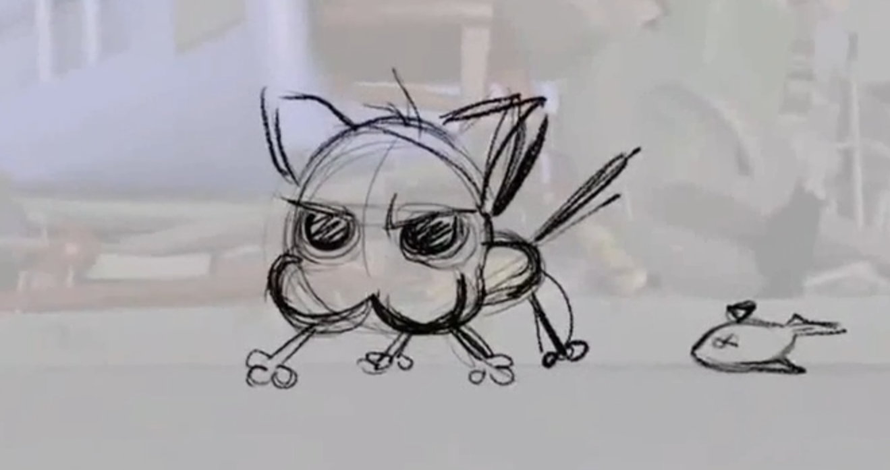
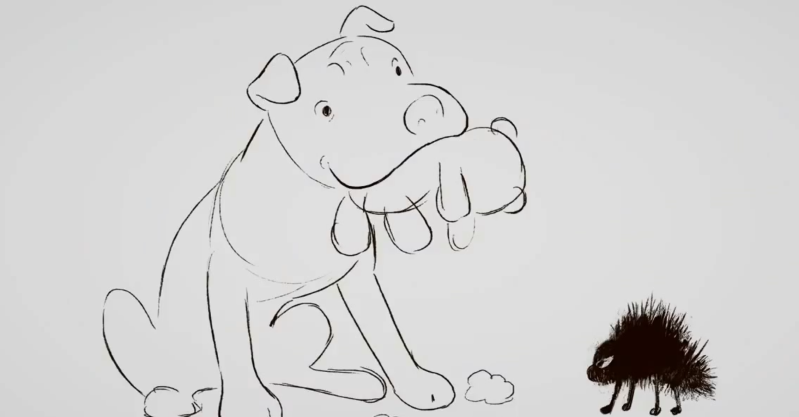
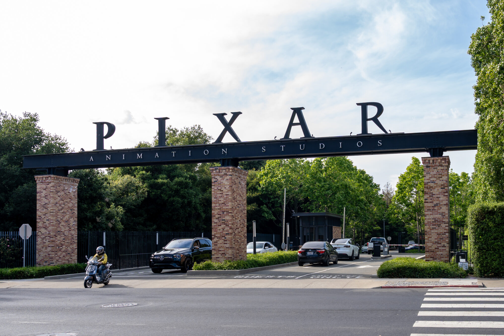
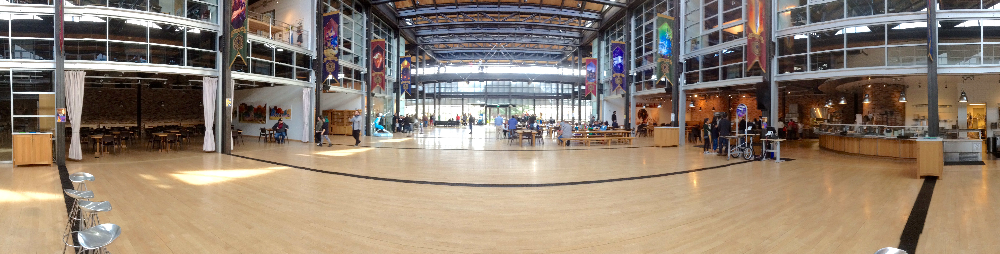

Всё началось с видео с котами
История «Kitbull» не начиналась как большой проект. Росана Салливан, работавшая сториборд-художником на «Хорошем динозавре» и «Суперсемейке 2», в 2013 году искала способ снять стресс во время напряжённого производства. Она смотрела смешные видео с кошками — и однажды коллега показала ей ролик, где кот выгибает спину, пытаясь казаться грозным, а потом сразу падает со стола [citation:2][citation:5].
«Меня так позабавил этот контраст между самовосприятием и реальностью, что захотелось нарисовать маленького котёнка, воплощающего эту суть», — вспоминала Салливан [citation:2]. Сначала это был просто скетч, побочный проект в свободное время, который помогал ей отвлекаться от рабочей рутины [citation:5].
Ранние наработки проекта
Эти изображения показывают, с чего начинался «Kitbull»: первые наброски котёнка и поиски визуального стиля. Росана Салливан начала рисовать этого персонажа ещё в 2013 году, задолго до того, как проект попал в программу SparkShorts [citation:2].


Дизайн котёнка был намеренно простым: «Если взять кусок угля, размазать его по странице и добавить два маленьких глазка — это и будет котёнок», — описывала Салливан [citation:5].
От скетча к истории о связи
Постепенно Салливан поняла, что хочет рассказать нечто большее. Она добавила питбуля — собаку с несправедливой репутацией, которую общество часто воспринимает как опасную. Так возникла история двух изгоев: бездомного котёнка и пса, которого хозяин использует в собачьих боях [citation:2].
«Я выросла очень застенчивой и чувствительной, мне было трудно заводить друзей. Я ассоциировала себя с этим котёнком, который не выходит из зоны комфорта, чтобы не быть уязвимым», — объясняла режиссёр [citation:2]. Тема одиночества, эмпатии и уязвимости стала эмоциональным ядром фильма.
Программа SparkShorts: шесть месяцев и ограниченный бюджет
Проект мог остаться личным хобби, но в Pixar как раз запускали экспериментальную программу SparkShorts. Сотрудникам давали возможность снять собственный короткометражный фильм — с поддержкой студии, но с жёсткими рамками: шесть месяцев и ограниченный бюджет [citation:2][citation:5].
Салливан и продюсер Кэтрин Хендриксон получили зелёный свет. Производство разделили на два этапа: первые три месяца ушли на разработку истории, дизайн и техническую подготовку, вторые три — на анимацию, фоны, композитинг и постпродакшн [citation:5].
Офис Pixar в Эмеривилле
«Kitbull» создавался в кампусе Pixar в Эмеривилле, Калифорния — месте, где рождались «История игрушек», «В поисках Немо» и десятки других анимационных хитов. Стив Джобс лично участвовал в проектировании здания, настояв на создании огромного центрального атриума, где сотрудники из разных отделов могли встречаться и обмениваться идеями [citation:1][citation:4].


Именно в этих стенах команда из 8–20 человек работала над «Kitbull» — от первых раскадровок до финальной анимации. На территории кампуса есть бассейн, волейбольная площадка, амфитеатр и знаменитая комната с хлопьями, где сотрудники могут перекусить в любое время [citation:1][citation:3].
Вызов: сделать 2D в студии, которая живёт в 3D
Самым неожиданным решением стал выбор техники. Pixar известна своим трёхмерным конвейером, а Салливан хотела снимать полностью рисованный фильм. Для неё это было вопросом ностальгии: она выросла на классической Disney-анимации и работах Studio Ghibli [citation:5][citation:10].
Кроме того, 2D лучше подходил для передачи «безумной, хаотичной энергии» котёнка. «Выразительность котёнка было бы сложнее уловить в CG с нашими временными и бюджетными ограничениями. А в 2D это было очень легко», — объясняла режиссёр [citation:5].
Проблема была в том, что в Pixar не существовало готового пайплайна для 2D. Команде пришлось фактически создать собственный производственный процесс, используя 3D-инфраструктуру студии для достижения рисованного результата [citation:2][citation:14].
Как рисовали котёнка и фоны
Для вдохновения Салливан собрала для аниматоров YouTube-плейлист с котами — «возможно, он начался ещё до того, как я начала работать над фильмом», признавалась она [citation:5]. Аниматоры изучали реальные движения животных, чтобы сохранить баланс между реализмом и карикатурой.
Фоны должны были передать «жёсткое, импрессионистское ощущение» района Мишн в Сан-Франциско. Для этого привлекли ветерана Pixar Билла Коуна, мастера пастели. Он создал стиль, имитирующий грубую пастельную текстуру через Photoshop [citation:5]. Арт-команда даже ходила по району с селфи-палками на уровне кошачьих глаз, чтобы увидеть Мишн с перспективы котёнка [citation:2].
Результат, которого не ожидали
«Kitbull» вышел на YouTube 18 февраля 2019 года и быстро набрал миллионы просмотров [citation:2]. Фильм номинировали на «Оскар» за лучший анимационный короткометражный фильм 2020 года, хотя статуэтка досталась «Hair Love».
Для Салливан и Хендриксон этот проект стал карьерным прорывом. Но важнее было другое: фильм показал, что даже в студии, одержимой технологиями, искренняя история и рисованная линия могут тронуть миллионы людей. «Эта дружба олицетворяла для меня мои собственные отношения с важными людьми и то, как я научилась преодолевать барьер, чтобы стать к ним ближе», — говорила режиссёр [citation:2].